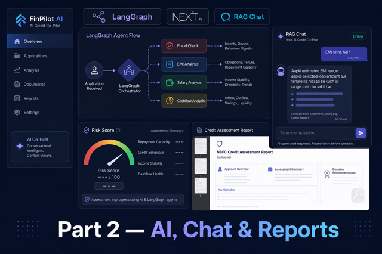
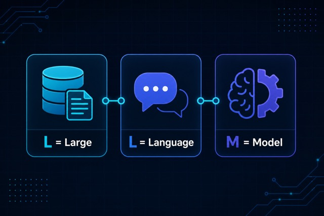
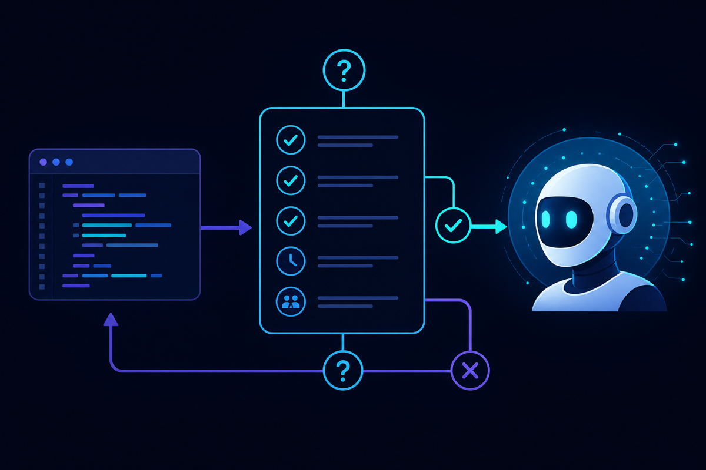

Case Study · Part 1 · Parsing
NBFC Platform — Part 1: Architecture & Multi-Bank Parsing
FastAPI backend, flexible Indian bank PDF/Excel parsing, bulk upload, categorization, and analytics engine.
Read Part 1 →NKSCoder Insights
Production lessons from fintech, AI, and large-scale Python backends — written by Nitesh Kumar Singh, Senior Software Developer at Quess Corp Ltd (Airtel Payments Bank).
FastAPI backend, flexible Indian bank PDF/Excel parsing, bulk upload, categorization, and analytics engine.
Read Part 1 →
Fraud, EMI, and salary agents, Hinglish RAG chat, multi-statement analysis, NBFC credit assessment PDF.
Read Part 2 →
Local LLM inference, GPU batch processing, and intelligent parsing for Airtel Payments Bank — Django, Celery, Ray, and PostgreSQL in production.
Read case study →
How to ask AI the right way with simple examples so you get useful answers for work and coding.
Read article →What LLM means, what it stands for, LLM basics, and how to start with AI — plain English, no jargon.
Read article →
LLM full form is Large Language Model. Learn the meaning, examples, types, and AI vs LLM difference.
Read article →
Ray LLM explained in simple words — parallel Python for faster LLM batch jobs with Ollama and GPUs.
Read article →
Large Language Models explained in plain English — how ChatGPT-style AI works, what it can do, and what it cannot.
Read article →
Run Llama and other open-source models locally — private, no API bills, and perfect for sensitive data.
Read article →
Text extraction, OCR, chunking, and LLM analysis — how AI actually understands your PDFs, step by step.
Read article →
Good vs bad AI use cases, a simple checklist, and how to combine AI with traditional code in production.
Read article →
Distributed preprocessing, batch GPU inference, and parallel aggregation — how Ray fits between Django, Celery, and Ollama in production LLM systems.
Read article →
REST API design, PostgreSQL indexing, RBAC, and audit trails — patterns from JM Financial, Ujjivan Bank, and enterprise banking projects.
Read article →
High-volume PDF and CSV ingestion pipelines for banking workloads — queue design, retries, idempotency, and horizontal scaling.
Read article →